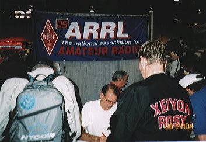
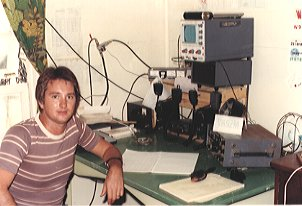
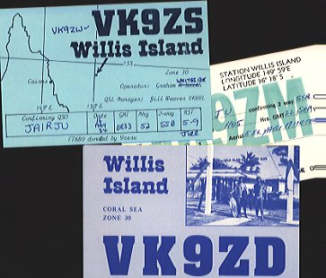

6m Today
Flash ! DX の読み方
TIME:UTC(JST-09:00)
Flash ! DX の読み方
TIME:UTC(JST-09:00)
【Back Issues May.2000】
31.May.2000(15:00c) *BY-TV 01:00- 49.750 -- *DU-TV 01:00- 48.250 -- *9M-TV 01:00- 48.240/260 -- VR2LC 01:33 50.110 CW DU1/GM4COK 02:15 50.110 CW/SSB BV8BC 03:53 50.110 CW BG7OH 04:09 50.110 SSB (SP2HNF/MM 04:12 50.110 SSB) BG7OH 05:35 50.110 SSB BD7NQ 07:53 50.110 CW BV2NT 08:48 50.110 SSB VK6JQ 08:56 50.110 CW VK4FNQ 08:56 50.110 SSB 30.May.2000(15:00b) *BY-TV 01:00- 49.750 -- *VK-TV 02:00- 46.172 -- *9M-TV 03:00- 48.240/260 -- 4W6UN 13:00- 50.097 CW Beacon 4W6UN 13:57 50.115 SSB
| ◎ 3D2AG、3D2ERでお馴染みのFiji(3D2)の首都スバ(ビチレブ島)で暴動が発生、 29日に全土に戒厳令が布告され一切の外出が禁止されている。日本の外務省も29日に渡航延期勧告を発令した。 同じ島内でもリゾート施設の多い島の西側のナンディ等は平穏を保っていて、観光客で賑わっていると。 オリンピックの聖火の通過は中止になった様だが、今のところハムの運用には直接の影響は無さそう。 |
29.May.2000(15:00c)
*BY-TV 01:00- 49.750 --
*VK-TV 07:00- 46.172 --
VK4FNQ 07:43 50.110/130 SSB
YJ8WR 08:20 50.110/150 SSB ex VK6JR/YJ0AWR
VK6RSX 08:50- 50.304 CW Beacon
VK6JQ 09:35 50.111 CW
28.May.2000(15:00d)
*BY-TV 01:00- 49.750 --
*DU-TV 01:00- 48.250 --
*9M-TV 01:00- 48.240 --
KH0/7L2PDJ 02:50 50.140 SSB
VR2SA 03:40 50.110 SSB
BV2TL 06:58 50.112 SSB
BV2NT 08:23 50.110 SSB
VR2ZGC 08:27 50.110/140 SSB
VR2XMT 08:29 50.130 SSB
VR2SA 08:30 50.110/120 SSB
VK4FNQ 09:06 50.135 SSB
BW2000 09:20 50.115 SSB
DU3SV 09:35 50.125 SSB
VR2LC 09:42 50.180 SSB
BV2TL 09:43 50.110 SSB
27.May.2000(10:00c)
*BY-TV 00:30- 49.750 --
*VK-TV 00:30- 46.172 --
*9M-TV 00:30- 48.240 --
VK4APE 00:57 50.110 SSB
VR2JK 00:58 50.110/105 CW
BG7OH 01:00 50.130 SSB
KH0/JA1TFJ 01:26 50.110 SSB
KH0/JG1OZH 02:14 50.130 SSB
HL3ERJ 03:10 50.130/120 SSB
HL5FSZ 03:20 50.185 SSB
*VK-TV 07:00- 46.172/240 --
VK4CP 07:44 50.110/150 CW/SSB
VK8ZAA 07:48 50.110 SSB
VK4JSR 07:49 50.110 SSB
KH0/JR1FKR 08:00 50.110 SSB
VR2XMT 09:15 50.110 SSB
VK6JQ 09:56 50.110 CW

26.May.2000(15:00c)
*BY-TV 01:00- 49.750 --
*VK-TV 09:00- 46.172 --
VK4APE 09:55 50.110 SSB
*9M-TV 10:00- 48.240/260 --
BG7OH 10:18 50.130 SSB
KH0/JA1TFJ 11:55 50.110 CW/SSB
KH0/JR1FKR 12:02 50.110 SSB
KH0/JO1DZO 12:59 50.115 SSB
25.May.2000(15:00e)
*BY-TV 01:00- 49.750 --
*9M-TV 01:00- 48.240/260 --
*DU-TV 01:00- 48.250 --
VR2YYW 01:12 50.110 SSB
BG7OH 01:16 50.130 SSB
VR2LC 01:44 50.110 CW
VK-TV 05:00 46.240 --
VK3OT 05:26 50.110/115 CW
HL2WA 05:27 50.115 SSB
VK6RSX 07:00- 50.304 CW Beacon
VK4BRG 07:05- 50.077 CW Beacon
BV2UB 08:35 50.112 SSB Es JA8←(JA1)→JA6/JR6
VR2XMT 08:39 50.130 SSB
BV4QI 08:42 50.125 SSB
VR2LC 08:42 50.140 SSB
VR2ZST 08:44 50.120 SSB
24.May.2000(15:00c)
*BY-TV 00:00- 49.750 --
HL5XF 05:01 50.110 SSB
*VK-TV 06:00- 46.172/240 --
VR2K 12:08 50.110/115 SSB
23.May.2000(15:00b)
*BY-TV 01:00- 49.750 --
DS2SMU 01:58 50.110/117 SSB
HL5XF 02:00 50.130 SSB
*ZL-TV 04:00- 45.24/25/26--
*VK-TV 04:00- 46.172/240 --
*9M-TV 09:00- 48.240/260 --
XW2A 09:49 50.130 SSB
|
◎ Dayton Hamvention/ARRL 2000 National Convention(Ohio U.S.A) 毎年恒例のデイトン・ハムベンション(Dayton Hamvention)が、5月19日(金)から21日(日)の3日間、 米国・オハイオ州のデイトンで開催され、今年も大勢の参加者で賑わった。 お馴染みの駐車場スペースを利用したフレア・マーケット(Flea Market-=今年はOutside Exhibitor's Areaと呼んでいた)は、 "極上ジャンク"を求めるHAMが朝から駆けずり廻っていた。 国内・外のメーカーが出展している屋内の展示場も大賑わいで、各メーカーのブースは黒山の人だかりだった。 日本の大手メーカーの新製品の発表も行われ、YAESUの200WClass Aパワーアンプを使ったFT-1000MP MARK5、 DSP内蔵のMaicro Mobile機・FT-100D、KEN WOODの1.9-1200MHzオールバンド・オールモード・トランシーバー、 ICOMのIC-756PRO(改)が注目を集めていた。 YAESUのブースでは先に行われた"TX0DX"のQSLを直接手渡すOH2BH・Marttiのコーナーが設置されていて、 QSLを受け取りに来たHAMで連日長蛇の列だった。 一方、先日のブータンのDXpeditionのA52AのQSLの発行も行われていて、ここにも大勢のDXerが詰めかけていた。 著名DXerが集まるDaytonのHamventionだが、今回は久しぶりのeyeballとなったM2社のK6MYC・Mike夫妻、 6mでも沖縄に入感した9U5D・GusとQSLマネジャーのSM5BFJ(SM0BFJ)・Leif、 BS7Hで一緒だったARRLの新メンバーシップ・サービス・マネジャーに就任したN7NG・Wayne等とeyeball QSOを楽しむ事が出来た。 直接話す機会はなかったが、KL7NOも会場で見かけた。 今年のDayton付近は開催日前日の木曜日(現地時間18日)に雹(ひょう)を伴う大荒れの天気となり、 シカゴ発のDayton行きの飛行機便は全てキャンセル、日本から訪れたツアーグループもシカゴで一日足止めされるアクシデントもあった。 幸い金曜日から天気は持ち直したが肌寒さを感じる天気だった。 |

18-22.May.2000(00:00a)
|
◎ Dayton Hamvention/ARRL 2000 National Convention (May 19,20,21 Ohio U.S.A) ◎ 5月18日(木)から5月22日(月)までの入感リポートは休止します。 |
17.May.2000(15:00c)
*BY-TV 01:00- 49.750 --
*ZL-TV 04:00- 45.24/25/26--
*VK-TV 06:30- 46.172/240 --
VK3OT 07:02 50.110 CW
DU1/GM4COK 09:16 50.110 CW
|
◎ VK9WI(Willis Island)(17.May.2000) Willis IsのVK9WIがアクティブにQRVしているが、VK9WIの最新のNews Releasesによると、 VK9WIのチームメンバーの一人として参加していたVK4APG(Peter)は、 一昨日(15日)彼らが乗っている双胴船(Catamaran)から降りようとした際に、大きな波でバランスを崩して転落、 左足を骨折してしまった。 Peterを本土まで空輸するためにヘリコプターが16日朝、島に到着、Peterは458Km離れたケアンズ(Cairns)の病院に無事収容された。 一時は、このヘリコプターの着陸スペースを確保するために、WARCバンドのアンテナを撤去したり、ちょっとした騒ぎだった。 VK4APGが運用メンバーから抜けた事でDXpeditionのオペレーターは3人になってしまったが、昨夜(16日)は、 今まで"戦力外"だったSkipper(船長)のVK4ZEX(David)が臨時に6mを運用してJAを捌いていた。 VK4ZEXはCWの運用が出来ないクラスの局だが、JAから再三CWのリクエストが寄せられて、 その都度「CWは運用出来ない」と断っていた。 6mのCWでアクティブだったVK4APGが抜け、CWのQSOのチャンスは今まで以上に少なくなると思われる。 |
16.May.2000(15:00d)
*VK-TV 00:30- 46.172/240 --
*ZL-TV 00:30- 45.24/25/26--
*BY-TV 04:00- 49.750 --
VK3OT 06:28 50.110 CW
*9M-TV 08:30- 48.240/260 --
DS2SMU 09:55 50.110/120 SSB
VK9WI 10:50 50.115/110 SSB/CW QSX 50.120MHz
VR2XMT 11:05 50.130 SSB
VK4APE 11:40 50.110 SSB
VK9WI 12:35 50.115 SSB
15.May.2000(10:00a)
Quiet at day time
(No signale 45-50MHz) --
|
◎ FO0TOH(Marquesas Is) すでに"旧聞"に属する話題となってしまったが、 去る3月31日から4月14日にかけてMarquesas IsのNuku HivaからFO0TOHを運用したJA1OEM・豊福さんの現地での模様が明された。 豊福さんの6mに掛ける執念が、今回のQSO成功につながったものと改めて感心させられる。 運用場所となったNuku Hiva島は、JA側の北方向に対してのロケーションが悪い事で知られている島だが、 ホテルなどの宿泊設備が集中している唯一の町(Taiohae)は、島の南側に位置しており、 JA方向は1,000m以上の山が塞いでいてHAM(特に6m)の運用には最悪の場所。 当初、この町を避けて島の北側の集落に滞在する予定だったが、現地で確認したところ、 ここも運用には適さない場所と判明、やむなくホテルの集中している町(Taiohae)に滞在する事になってしまった。 ここで諦めなかったのが豊福さんで、JA方向が見通せる場所まで移動して運用する事を計画。 さっそく現地で大型のバッテリーを購入(かなり高価なものだったと)、 4輪駆動の運転手付きピックアップ・トラックの"タクシー"を借りる事に決める。 運用場所は町から峠を二つ越えた山頂の道路脇。 舗装もされていない道路を片道2時間半以上走らなければならず、移動はかなりの"苦行"だったと。 山頂は寒く、運用している時にスコールで濡れてしまい、これが帰国時に体調を崩す原因となってしま ったとの事。この移動は滞在中に3日間実行され、3日間とも6mがオープン、 JAの22局(JA8、0を除く)を含む全99局のQSO成功をもたらした。 |
14.May.2000(15:00c)
*VK-TV 02:00- 46.172 --
KH0/JH1HYH 02:40 50.115 CW
*9M-TV 07:30- 48.240/260 --
*DU-TV 07:30- 48.250 --
9M2TO/B 07:30- 50.005 CW Beacon
9M2TO 07:42 50.115 CW/SSB
9M2/JI1ETU 07:43 50.132 SSB
9M2KE 07:45 50.126 SSB
V73SIX 07:47- 50.014 CW Beacon
VK4JSR 07:50 50.145 SSB
VK4NW 07:53 50.110/130 SSB
VK8RAS 07:55- 50.047 CW Beacon
VK4RGG 07:55- 50.058 CW Beacon
VK4BRG 07:55- 50.077 CW Beacon
VK4JH 08:09 50.114 CW
VK4CP 08:11 50.130 SSB
VK4ABW 08:32 50.110 SSB
VK4DO 08:34 50.110 SSB
VK4ADC 08:36 50.110 SSB
HL3IUA 08:36 50.110 SSB
VK9WI 08:37 50.110/140 SSB Willis Is.
VK9WI 08:46 50.115 SSB QSX 50.130-200MHz!?
VK9WI 10:00 50.115 SSB QSX UP
SP2HNF/MM 12:54 50.110 CW
VK8AH 14:04 50.110 CW
|
◎ Willis IsのVK9WIが入感した。 08:37z頃に50.110MHzでVK4'sがパイルアップしていたHL3IUAをこの局がVK4に混じって一緒に呼んできたのが最初。 "めざとく"VK9WIのコールを聞きつけたJA'sのパイルアップが、50.110MHzで始まったが、2、3局QSOして50.140MHzにQSY。 しかし、この周波数も"オンフレ"のパイルアップでほとんどQSO出来ず、VK9WIは50.160MHzのスプリットを指定したり、 コールエリアの指定を始めたが、突如50.115MHzにQSYしてしまった。 この周波数でのスプリットの指定は50.130MHz。ここでもほとんど応答する事が出来ず、 遂にスプリットの周波数は、50.130-50.200MHzを指定！(こんな指定をされたのでは呼ぶ方はたまらないが...）。 ころころ変わる指定にすっかり翻弄された初日のオープンだった。 VK9WIの運用は5月30日までの予定。 QSLはVK4APG宛。 |


1978年9月21日に初入感したVK9ZM・Bill

|
◎ VK9(Willis Is)が久しぶりにQRVしているが、Willis IsがJAに初めて入感したのは、
1978年9月21日のVK9ZM・Billだった。52MHz時代のWillis Isは、気象観測のため職員が常駐していて、
VK9の中では一番アクティビィティーの高かったカントリー。 現在も一般の旅行客の渡航は出来ないが、今回は、VK2ICV(Nick)、VK4APG(Peter)、VK4BKM(Alan)、 VK4DH(David)、VK4ZEK(David=Skipper)が許可を得て34フィートのCatamaran(双胴船)"Bach and Byte"でこの島に渡っている。 |
13.May.2000(15:00d)
*BY-TV 01:00- 49.750 --
HL2WA 02:40 50.110 CW
*VK-TV 03:00- 46.172 --
*ZL-TV 03:00- 45.24/25/26--
VK4FNQ 04:46 50.110 SSB
VK6RPH 05:00- 50.066 CW Beacon
3D2AG 07:28 50.110 CW/SSB
*9M-TV 09:00- 48.240/260 --
|
◎ A52A(Bhutan) A5(ブータン)からQRVしていたA52AのDXpeditionは12日で終了した。 結局、6mのオープンは4日と8日(沖縄)の2回だけだったが、A52Aの"Log Search"によると、 6mのQSO数は236(SSB=138、CW=98)だった。 SSBでQSOした後にCWでもQSOした局が多いと思われるので(同じモードで2度以上QSOしている局もいた)、 A52AでNewを増やした局は200を大幅に下回るはず。それにしてもJA1以北はオープンに恵まれず、 残念な結果となった。 |
12.May.2000(15:00d)
*VK-TV 03:00- 46.172 --
*ZL-TV 04:00- 45.24/25/26--
*9M-TV 06:00- 48.240/260 --
*DU-TV 06:00- 48.250 --
FR1AN 06:19 50.110 SSB
9M2TO/B 06:20- 50.005 CW Beacon
V73SIX 06:55- 50.014 CW Beacon
VK4NW 06:57 50.110/115 SSB
VK6RSX 07:00- 50.304 CW Beacon
VK8RAS 07:09- 50.047 CW Beacon
VK4RGG 07:00- 50.058 CW Beacon
VK4BRG 07:00- 50.077 CW Beacon
VK4ABP 07:00- 52.346 CW Beacon
VK4BLK 07:14 50.180 SSB
VK4BIT 07:49 50.110 SSB
VK3DQJ 07:57 50.110 CW
VK2YHN 08:01 50.110/150 SSB
FK1TK 08:02 50.130 SSB
VK4ACJ 08:41 50.110 SSB
VR2XMT 12:11 50.110/150 SSB
BX2AB 12:14 50.110 CW
11.May.2000(15:00c)
*VK-TV 00:30- 46.172/240 --
*ZL-TV 02:00- 45.24/25/26--
*BY-TV 02:00- 49.750 --
*9M-TV 03:50- 48.240/260 --
*DU-TV 03:50- 48.250 --
HL2AMO 03:50 50.110 CW
9M2TO/B 06:20 50.005 CW Beacon
VK6RSX 06:20- 50.304 CW Beacon
VK4PU 06:49 50.110 CW
VK4NW 07:06 50.110/115 SSB
VK8RAS 07:09- 50.047 CW Beacon
FK1TK 07:23 50.115/130 SSB
VK4ACJ 07:49 50.110 SSB
VK4RGG 08:10- 50.058 CW Beacon
VK4BRG 08:10- 50.077 CW Beacon
VK4ABP 08:10- 52.346 CW Beacon
VK2QF 08:24 50.110/120 CW/SSB
VK4CXQ 08:53 50.110 CW
VK4FNQ 09:30 50.115 SSB
|
◎ 9N7SZ(Nepal)の結果 ネパールから5月9日まで9N7SZを運用したJA9LSZ・八原さんが昨日(10日)帰国した。 6mでの最終的な交信数は下記の通り。 ネパールからJAに対しての伝搬はダイレクトの東方向が一番良く、 一方ヒマラヤの麓にあるカトマンズからはヨーロッパ方向は厳しく一局もQSOは出来なかったと。 QSO出来たJAも信号は弱く、加えて雨季の前の雷、TVのバズ、停電などで運用はかなり苦労が伴うものだったとのこと。(TNX JA9LSZ) |
JA1=63 JA6=79 VR2=34 YB= 2
JA2=75 JA7=11 VK= 5 P2= 5
JA3=43 JA8= 0 V7= 1 DU= 1
JA4=42 JA9=18 BY= 5 合計=423 (JA=361 その他=62)
JA5=19 JA0=11 BV= 9 (SSB=69 JA=23) (注)QSO数は重複を含みます
|
今回の9N7SZの信号は、JA側ではヨーロッパなどが入感する南々西(200-220度)のスキャッターでの入感だったため、
西日本に比べ北海道・東北など北日本は不利だった。 リポートでは「JAは東方向のダイレクトが一番良かった」とされているが、 JA側のアンテナの方向などから考えるとどの辺で反射した伝搬なのか大いに興味がある。 特に同じ時期に運用していたブータンのA52Aがこの時間帯に運用してもパスが無かったのは何故なのか？、 これも今回の伝搬の"不思議"だ。 |
10.May.2000(15:00c)
*BY-TV 00:30- 49.750 --
*9M-TV 00:30- 48.240/260 --
VK8RAS 07:45- 50.047 CW Beacon
VK6RSX 07:45- 50.304 CW Beacon
P29BPL 11:45 50.029 CW Beacon
4W6UN 11:45 50.097 CW Beacon
YB0ARA/9 11:55 50.110 SSB
VK4CXQ 12:20 50.110 CW
VK4FNQ 12:25 50.110/130 SSB
09.May.2000(15:00a)
*VK-TV 00:30- 46.172 --
*9M-TV 07:00- 48.240/260 --
VK3OT 07:47 50.110 SSB
FK1TK 07:55 50.110/130 SSB
VK6JQ 07:56 50.111 CW
V73AT 07:58 50.110 CW
V73SIX 07:58 50.014 CW Beacon
VK8RAS 07:59- 50.047 CW Beacon
VK4BRG 07:59- 50.077 CW Beacon
VK4ABP 08:00- 52.346 CW Beacon
VK6RSX 08:00- 50.304 CW Beacon
DU3SV 09:43 50.200 SSB
9N7SZ 09:44 50.125 CW
DU1EV 09:55 50.120 SSB
KH8/N5OLS 10:00 50.102 CW
P29BPL 13:29 50.029 CW Beacon
08.May.2000(15:00b)
*ZL-TV 00:30- 45.24/25/26--
*VK-TV 00:30- 46.172 --
*9M-TV 04:00- 48.240/260 --
*BY-TV 04:00- 49.750 --
HL5/JA6HW 07:22 50.110/125 SSB
HL5XF 08:25 50.130 SSB
HL5XF 08:27 51.200/240 FM
VR2XMT 09:31 50.115 SSB
(A52A 09:40 50.115 SSB/CW QSO JR6's)
BV2DP 09:50 50.115 CW
9N7SZ 10:00 50.125 CW
BX2AB 10:10 50.107 CW
BV4SF 10:24 50.135 SSB
|
◎ 5月4日以来入感の無かったブータンのA52Aが、再び沖縄を中心にオープン。
沖縄でRS59の信号も、残念ながら1エリアでは"かけら"も聞こえない。
10:00z頃からA5側でアンテナをVK方面に向け"スキャッター"にもトライしてくれたが、
信号は聞こえないまま。 ネパールの9N7SZは今日もスキャッターで入感しているのに僅か数100Kmの距離の差ながら"立地条件"が悪いのか、 A5からの6mの電波は届かない。 |
07.May.2000(15:00a)
*ZL-TV 01:00- 45.24/25/26--
*VK-TV 01:00- 46.172/240 --
ZL2TPY 01:33 50.110/107 SSB/CW CQ EU!
BW2000 04:10 50.117 SSB
VK4APE 06:32 50.110 SSB
VK4FNQ 06:53 50.105 SSB
VK3OT 06:58 50.135 SSB
*9M-TV 07:00- 48.240/260 --
VK8RAS 07:00- 50.047 CW Beacon
VK4ABP 07:00- 52.346 CW Beacon
P29BPL 07:10- 50.029 CW Beacon
DU1EV 07:48 50.139 CW
KH2JU 08:18 50.130 SSB
VR2XMT 08:42 50.115 SSB
BG7OH 09:09 50.130 SSB
9N7SZ 09:23 50.125 CW
9M2NK 09:30 50.107 CW
4W6UN 11:55 50.097 CW Beacon
VK8KTC 12:13 50.110 SSB QSO with 9N7SZ
VK8AH 12:28 50.115 CW
P29BPL 13:30- 50.029 CW Beacon
|
◎ 9N7SZ(Nepal) ネパールからQRVしている9N7SZは、連日南々西のスキャッターで入感、多くの局がQSOしているが、 OPのJA9LSZ・八原(Yahara)さんからの報告によると、5月6日現在のQSO数は341。 内訳は下記の通り。 現地では雷が多くノイズがあるので、JAから信号のピックアップに苦労しているが、逆に9Nから応答しても、 スキャッターで信号が弱いせいかリターンの無い局が多いとの事。 JA9LSZ(9N7SZ)、JJ2NYT(9N7YT)、JA8MWU(9N7WU)は5月9日(火)まで、JA9VJ(9N7VJ)、JG5CIP(9N7IP) は5月13日(土)まで運用する。 6mのQSOは9日が最後のチャンス？。(TNX JA9LSZ & JJ2NYT) |
JA1=58 JA6=67 VR2=26 YB= 1
JA2=68 JA7=10 VK= 1 P2= 1
JA3=39 JA8= 0 V7= 1
JA4=31 JA9=11 BV= 1 合計=341
JA5=16 JA0= 8 BY= 1 (注)合計は340で数値が違いますが、
リポート通り記載します。
06.May.2000(15:00a)
*ZL-TV 00:00- 45.24/25/26--
*VK-TV 03:00- 46.172/240 --
NI6G 03:25 50.110 CW SC 140 deg
KG6KH? 03:58 50.110 CW Called FK8CA
JD1BKG 04:35 50.207 SSB
FK1TK 04:38 50.130 SSB
*9M-TV 05:00- 48.240/260 --
*DU-TV 05:00- 48.250 --
VK4DOX 05:28 50.101 CW
4S7YSG 05:33 50.110/135 CW
VK8RAS 05:47- 50.047 CW Beacon
VK6RSX 05:47- 50.304 CW Beacon
VK4ABP 05:47- 52.346 CW Beacon
FO3BM 05:56 50.110 SSB
VK3OT 07:45 50.115 CW
BV2NT 07:54 50.115 SSB
FO3BM 07:59 50.110/130 SSB
VK4CXQ 08:16 50.115 CW
9N7SZ 09:10 50.125 CW QSX 50.175MHz
BV3FQ 10:00 50.120 SSB
BX2AB 10:07 50.115 SSB
05.May.2000(15:00a)
*VK-TV 00:30- 46.172/240 --
*9M-TV 08:00- 48.240/260 --
*DU-TV 08:00- 48.250 --
FO3BM 08:35 50.110/135 SSB
KH8/N5OLS 08:50 50.102 CW
9M2TO/B 09:00- 50.005 CW Beacon
9M6SMC 09:00- 50.015 CW Beacon
9N7SZ 09:05 50.110/125 CW 220 SC. QSX 50.175MHz
4W6UN 09:25- 50.097 CW Beacon
04.May.2000(15:00b)
*BY-TV 03:00- 49.750 --
*VK-TV 03:00- 46.172/240 --
*9M-TV 03:00- 48.240/260 --
9M2TO/B 04:05- 50.005 CW Beacon
9M2/JI1ETU 04:05- 50.085 CW Beacon
VK8RAS 04:07- 50.047 CW Beacon
VK6RSX 04:07- 50.304 CW Beacon
VK6RPH 04:20- 50.066 CW Beacon
9M2TO 04:56 50.110/149 CW
VK6RO 04:56 50.110 SSB
A52A 06:40 50.115 SSB/CW QSX UP5
3D2ER 07:58 50.120 CW
(9N7WU 08:10 50.125 SSB JA4-JR6)
(9N7VJ 08:17 50.125 SSB JA4-JR6)
VK4CYB 08:30 50.130 SSB OP & QSL JE1LET
(A52JS 08:30 50.110 CW JA5.6)
VK4DHF 09:04 50.115 CW
9N7SZ 09:25 50.125 CW QSX 50KHz UP
KH8/N5OLS 09:40 50.102 CW
VK6JQ 10:15 50.115 CW
VR2XMT 10:15 50.115 SSB
V73AT 10:34 50.110 CW
VK4CXQ 12:12 50.100 CW
VK8MS 13:28 50.110 SSB
P29BPL 14:00- 50.029 CW Beacon
|
◎ BhutanのA52Aは、4日06:40z頃から50.115MHzでQRVしてきた。アンテナは西方向(270度)のダイレクト。
入感エリアはJA2以西で良く、1エリアではほとんど聞こえなかった。
当初予定されていた50KHz UPのスプリット運用ではなく、わずか5KHz UPだったため、
SSBでパイルアップするローカル局の"かぶり"がひどかった。 相変わらず"オンフレ"でコールしている局が多かったが、DX-Pediの場合はスプリットで運用しているのが"常識"なので、 送信する前に確認すること。 A52Aは、6局以上の同時運用が可能で、6mは専用のリグが用意されている。 4日から8日までJA3IGが常時ワッチの体制となる。尚、A52JS(OP & QSL.VK9NS)の入感もJA5-6からリポートされている。 |
03.May.2000(15:00b)
*BY-TV 01:00- 49.750 --
*VK-TV 02:00- 46.172/240 --
*ZL-TV 02:00- 45.24/25/26--
ZL2KT 02:19 50.110 SSB
ZL4WA 02:22 50.110/107 SSB/CW
VK4BKM 02:24 50.110 SSB
KH6SX 02:24 50.110 CW
KH6HME 02:30- 50.061 CW Beacon
V73SIX 02:30- 50.014 CW Beacon
ZL3GS 02:47 50.105 CW
VK4PU 05:00 50.110 SSB
V73AT 05:42 50.110 CW
(ZS6AVP 07:02 50.109 CW JA2-?)
(ZS6AXT 07:09 50.096 CW JA2-?)
FR1AN 07:30 50.110 SSB
VR2XMT 08:51 50.110 SSB
FO3BM 09:55 50.110 SSB
9N7SZ 10:10 50.125 CW 180-220 SC QSX 50.175MHz
FR1AN 10:49 50.120 SSB
| ◎ 今日から運用が開始されたネパールの9N7SZ(OP.JA9LSZ)が早々と入感した。 入感方向は180度から220度のスキャッター。1エリアでの信号は強いものではなかったが、 受信周波数が50KHz UPのスプリットのため、ローカルに"潰される"こともなく安心して呼ぶことが出来た。 ただ、最初の頃は5KHz下の50.120MHzに出ていたFR1ANを呼ぶSSBのパイルアップが時々"被って"いた。 11:30z頃には信号も上昇、12:15z頃まで入感した。 |
02.May.2000(15:00b)
BV2NT 00:23 50.115 SSB
BD7NQ 00:27 50.120 SSB
BA7IA 00:33 50.107 CW
BX2AB 00:36 50.125 SSB
BV3FQ 00:45 50.115 SSB
*VK-TV 00:50- 46.172 --
FO3BM 03:19-30 50.110 SSB
FH/JR4PMX 04:02-55 50.104 SSB QSX 3 & 10KHz UP
4S7EA 04:55 50.110 CW
HL3IUA 04:56 50.110 CW
*9M-TV 07:30- 48.240/260 --
*DU-TV 07:30- 48.250 --
9M6SMC 07:40- 50.015 CW Beacon
9M2TO/B 07:40- 50.005 CW Beacon
3D2AG 07:55 50.110 SSB
VK4ABW 07:56 50.110 SSB
FR1GZ 08:20 50.110 SSB
4S7EA 08:30 50.120 SSB
BV4QI 09:07 50.120 SSB
BX2AB 09:13 50.106 CW
VK8MS 09:15 50.107 SSB
ZS6AXT 09:41 50.105/131 CW/SSB
ZS6AVP 09:50 50.104 CW
JD1BKR 10:00 50.115 SSB
VR2YEK 10:13 50.135 SSB
P29BPL 11:27- 50.029 CW Beacon
4W6UN 13:20 50.120 SSB QSX 50.115MHz
|
◎ 朝から南西方向のEsが強力。 04:00z過ぎから聞こえてきたMayotteのFH/JR4PMXは、
260度方向から50分間ほどFBに入感していた。 昨日の4S7YSG同様、F2 & Esの"複合のパス"と思われる。
◎ 4S7YSG(Sri Lanka)(03.May.2000) |
01.May.2000(15:00a)
*VK-TV 05:00- 46.172/240 --
*ZL-TV 05:00- 45.24/25/26--
*9M-TV 05:00- 48.24/25/26--
*DU-TV 05:00- 48.250 --
4S7YSG 05:20 50.135 CW/SSB UP2-10
(9N7RN 06:18 50.110 SSB JA3-JR6) QSL via IK4ZGY
(FH/JR4PMX 06:03 50.105 CW/SSB JA6.JR6)
VK4ABW 06:46 50.110 SSB
KH6SX 06:52 50.110/103 CW
KH6HME/B 06:54- 50.061 CW Beacon
K6MIO/KH6 06:57 50.110 SSB
KH7L 07:25 50.140 CW
3D2AG 07:35 50.110/105 SSB/CW
4S7YSG 07:50 50.110/135 CW QSX 50.145MHz
FO3BM 07:44 50.110 SSB
(FR1DZ 08:39 50.110 SSB JA6.JR6)
JD1BKR 08:45 50.110/115 SSB Iwo jima
VK8KTC 09:34 50.110/135 SSB
XW2A 09:35 50.110/137 SSB QSX 50.142MHz
VK4JH 09:39 50.110 CW
VK4APE 12:52 50.110 SSB
P29BPL 12:53 50.029 CW Beacon
4W6UN 13:40 50.110/120 SSB QSX 50.115MHz
|
◎ 午後から東方向のKH6'sから、西方向の9N7RN(ネパール)まで、ワイドに6mのコンデションがオープンした。
特に1エリアでは普段はなかなか聞くことの出来ない、スリランカの4S7YSG・佐竹さんの信号が長時間にわたり入感、
多くの局がSSB/CWでQSOに成功。 突然入感してきた9N7RZは、沖縄から入感エリアが北上してきたが、QSOしていたのは3エリア付近までで、 残念ながら1エリアでは"かけら"も聞こえなかった。 5月3日からのQRVが予定されているJA9LSZ(9N7SZ)等、日本からのOPの運用に期待。 昨日、今日と沖縄や北海道北部が強力に入感するようになった。いよいよEsシーズンも間近！。
◎ 9N7(Nepal)(01.May.2000)
◎ A5(Bhutan DXpedition)(01.May.2000) |